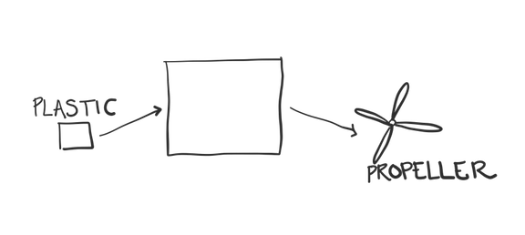
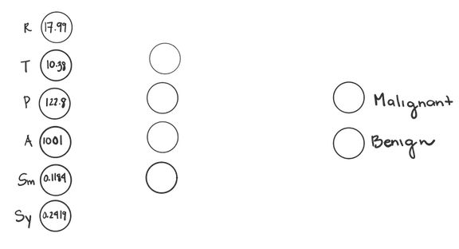
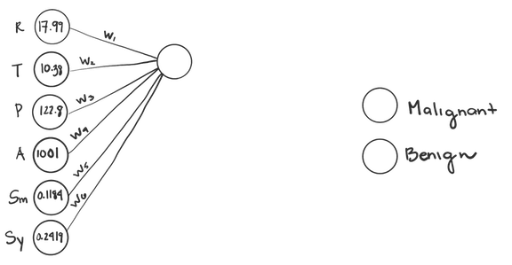
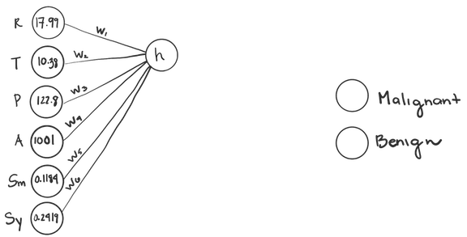
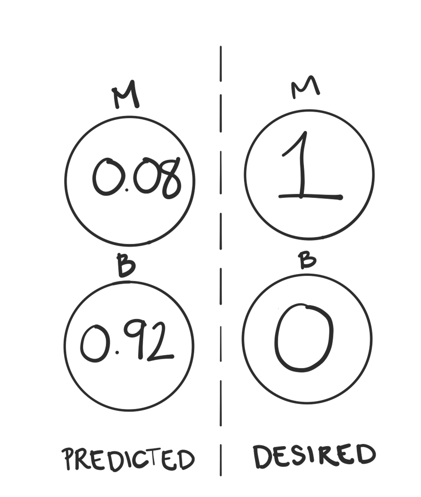
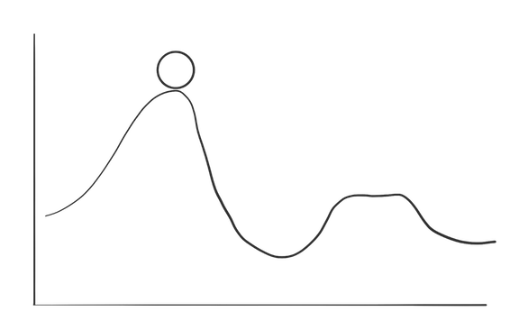
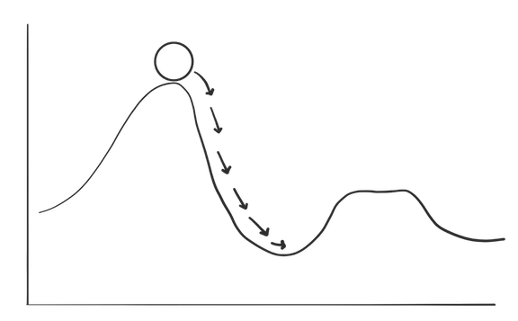

CIO Level Summary
- Neural Networks (NNs) are a useful and flexible tool that can help learn patterns from data that humans cannot
- Neural Networks contain layers of nodes which feed directly into the following layer.
- As information moves through the NN, information is weighted and combined
- Once a prediction is made, the Neural Network compares its predictions to the desired output
- Neural Networks learn by figuring out how to tweak its calculations in order to reduce the amount of errors it makes
What are Neural Nets (NNs)?
Neural Networks have gotten a lot of attention in the past few decades. They’re used in social media apps like Snapchat, and they’re being used more and more in the medical and health fields. Neural Networks--or Neural Nets for short--are an incredibly flexible tool to have in your analytical tool belt because they are universal approximators. This means that under certain assumptions, a neural network can approximate any function.
Imagine that you’re building a toy helicopter. You grab some supplies like plastic, wood, and glue, and you get started. The first thing you need to do is make the propellor out of plastic. But you’re not sure how to do it...if you were an expert, you might know how to cut and shape the propeller by hand. But you’re not an expert. So you’re stuck.
Someone hands you a box, and tells you that it’s a universal tool approximator. All you have to do is show it a few examples of the propellers that you want, input some plastic, and it will learn how to output the propellers. The box learns the process that takes raw plastic and turns it into a propeller...or at least it gets close enough.
The best thing about this box is that it can learn to make or do anything. When you need cap for your pen, or a buckle for your belt, a box can learn how to make it.Neural Networks are similar to these boxes. But their inputs and outputs are numbers, rather than materials and gadgets.
Often, we want Neural Networks to approximate the relationship between data (the input) and some kind of prediction (our output). For example, we may want to approximate the relationship between features from a digitized image of a fine needle aspirate of a breast mass and whether or not it’s malignant. We can use the variables radius, texture, perimeter, area, smoothness, and symmetry of the tumor cell nuclei as our inputs.
We can call the true relationship that maps the inputs (radius, texture, perimeter, area, smoothness, and symmetry) onto the output (malignancy diagnosis) \(f^*(x)%0\).
The Neural Network learns what \(f^*(x)%0\) is from the data. It won’t always get perfectly correct, but it can come up with some function that is quite close. This is a huge help, because often the function that turns inputs into outputs is complex, and would be hard for a human to discover on their own.
The Structure
Neural Networks use layers of nodes to take data from inputs to outputs. For now, let’s think of each node as something that stores a value. The first layer is our input layer. It’s nodes represent the data that we feed into our network.
The last layer is the output layer, which has two nodes, one for Malignant. One for Benign. Each of these nodes will eventually have a value in them once we turn our inputs into outputs. Whichever node has a higher value, will be the diagnosis we choose.
So now, let’s focus on the middle layers, called hidden layers
The Hidden Layers
This first hidden layer contains four nodes, and we need to fill these nodes with values. These values are calculated using the values from the layer before them. Let’s focus on just one of these nodes for now. The values from the input layer are weighted and added together to form a single number. In general the weight \(w^l_{(i,j)}%0\) connects the \(ith\) node from the \(lth\) layer to the \(jth\) neuron of the \(l+1th\) layer. 
We also add a constant--called the bias--to this equation. In this form, it might look similar to a linear regression formula.
\(w^1_{(1,1)}R + w^1_{(2,1)}T + w^1_{(3,1)}P + w^1_{(4,1)}A + w^1_{(5,1)}Sm +w^1_{(6,1)}Sy + b = \textbf{w'}x %0\)
The final step is to apply an activation function to the result \({w'}x%0\) of this equation. The activation function takes the weighted inputs and bias, and transforms it. If we wanted the value to remain unchanged, we could apply the function \(f(x) = x\). But, there are many different activation functions we can use.
One popular one is the Rectified Linear Unit, or ReLU (pronounced Rey-Loo) for short. The ReLU activation function takes all negative numbers, and turns them into zeroes. It leaves positive numbers unchanged. Non-linear activation functions like the ReLU are an important part of what allows Neural Networks to approximate nonlinear functions. Without them, Neural Nets would only be able to approximate linear functions.
Once we’ve added up all the weighted inputs and the bias, and applied an activation function, we finally have a value to put into our node.
\(h = max\{0,\textbf{w'}x\}%0\)
And then, we fill in the rest of the nodes for this layer, doing the same thing, but with different weights and biases. The general steps are:
- Add the weighted values from the previous layer together
- Add the bias
- Apply the activation function
We can use different activation functions for each layer. In fact for the last layer, we’ll want to use a softmax activation. Softmax is often used when the outputs you’d like to predict are categorical. It takes all the values from that layer and normalizes them so that they’re all between 0 and 1, and the sum of all the outputs is 1.
\(\text{Softmax:} \frac{e^{z_i}}{\Sigma^{k}_{i = 1}e^{z_i}}%0\)
After applying the softmax activation, we can use these new outputs as probabilities, or as a measure of how strongly the Network believes a value is the correct answer. For example, say that the values of our output layer are 1.6 and 4 before we apply the softmax activation.
After applying the activation function, our values will be 0.08 and 0.92 since
\(\frac{e^{1.6}}{e^{1.6} + e^{4}} \approx 0.08 \text{ and } \frac{e^{4}}{e^{1.6} + e^{4}} \approx 0.92%0\)
In this case, the neural network will guess that the tumor is Benign, since it has the higher value.
The Model
So now we’ve built a Feed Forward Neural Network. We started with an input layer which took in our data on breast tumors, and by moving through two hidden layers, produced an output layer that can predict whether a tumor is Malignant, or Benign.
Error Functions
Before we give the Neural Network any data, we randomly initialize the weights and biases, just so that it has some numbers to start with. Then we give it some data--the training data--and look at it’s outputs. At first, the outputs will be garbage, since our weights were randomly initialized and don’t mean anything. But the Neural Net, like mature humans, learns from its mistakes.
We can compare the output the neural net gave us to the output that we want. For example, if the neural network gave use the output from before, we’d end up with a 0.08 for Malignant and 0.92 for Benign:
We know that this particular tumor was Malignant, so our Neural Network was pretty far off. The correct output would be a 1 for Malignant and 0 for Benign. Which would represent the Network being sure that the tumor is Malignant.
We need a way to quantify just how wrong our prediction was. One common way is the mean squared error
\(MSE =E((y - \hat{y})^2)%0\)
The mean squared error is calculated by taking the difference between your desired outcomes, and your predicted outcomes, and squaring them, and adding them together.
\((1-0.08)^2 = 0.8464%0\)
\((0-0.92)^2 = 0.8464%0\)
There are other ways of measuring the error (also called the loss or cost), and whichever function you use is called the error function (also called the loss function or cost function).
We want to be as accurate as possible, so we want to minimize our error function. And our error function is just a result of all the processes, including the weights, biases, and activation functions that we used in our neural network.
In order to minimize our error function, we need to change these weights, biases, and activation functions so that our prediction is closer to our desired output. But figuring out which tweaks to make to these parameters isn’t immediately clear.
Imagine you’re a ball on this line. You want to find the lowest point.
Backpropogation
If you were a particularly math inclined ball, you could take the derivative and second derivatives of the function, and find the global minimum. But that’s not always possible or cost effective. Instead, we find the gradient of the error function.
The gradient is the rate of change of our error function.
It tells us how fast the error function changes when we make small changes to our model parameters (like the weights, and biases). In other words, if you fiddled with the weights and biases of the neural network, how much would the Neural Network’s output change?
We often find the gradient using a method called backpropagation, or backprop for short.
Backpropagation is a way of applying the chain rule from calculus to calculate the gradient of our error function. The error function relies on the output that our Neural Network produces. And that output depends on the activation function we used. And the value we plugged into our activation function depends on the weights and biases that we used.

Backpropagation allows us to find our gradient (the derivative of the error function with respect to our parameters) by looking at how small changes in our weight and bias parameters change our weighted sum, z. And then, how small changes in our weighted sum, z, affect the output of our Neural Network, a. And finally, how small changes in our output, a, affect the value of the error function, J.
\(\underbrace{w = weights}_{\text{our weights}}%0\)
\(\underbrace{z = \textbf{w'}x}_{\text{weighted sum of previous nodes}}%0\)
\(\underbrace{a = \sigma(\textbf{w'}x)}_{\text{output after applying activation function to z}}%0\)
\(\underbrace{J = Sum(y - \bar{y})^2}_{\text{the error function}}%0\)
\(\underbrace{\frac{\delta J}{\delta w}}_{\text{the gradient of our error function}} = \frac{\delta z}{\delta w}\frac{\delta a }{\delta z}\frac{\delta J}{\delta a}%0\)
Gradient Descent
So instead of doing a large calculation to find the absolute global minimum, we can just take one step at a time towards a minimum. At each step, we’ll look for the direction that is the steepest downhill, and step there. One step at a time, we’ll reach a minimum.
It may not be the *global* minimum. But it will be *a* minimum, and usually that is good enough to help the Neural Network make accurate predictions. This iterative algorithm for finding the minimum of a function is called gradient descent, since we are descending the gradient, and it’s often used to minimize the error function.
Practically, it can be computationally expensive to calculate the gradient using all the training data. We’re often going to give the Neural Net Thousands if not millions of data points, so calculating the error for every one of those points could take a while. To make things more efficient, we can use Stochastic Gradient Descent. Instead of calculating the gradient using all of our training data, we use smaller samples of our training data, to help speed up the calculations.
We do sacrifice a little bit of accuracy by not using all the data samples, but Stochastic Gradient Descent is often very effective at finding an appropriate minimum. Even though it only uses smaller samples of the data for each step.
Conclusion
So, we’ve found our gradient using backpropagation, and chosen which direction to go using gradient descent or stochastic gradient descent, we repeat the process again and again until we reach a place where our error function is minimized. Hopefully, that means that our Neural Network is making less errors than it was before. It’s learned something!
We now have a Neural Network that’s pretty good at predicting whether a breast tumor is Malignant, or Benign. If a new biopsy comes in, we can feed our Neural Network the data, and ask for predictions. While the expertise of doctors and specialists is still necessary, Neural Networks like this one can help screen or triage cases so that doctors have more time to spend with patients, and can direct their energy towards the less clear cut cases.
If you can give a Neural Network enough data to learn from, their performances are incredibly accurate.
Python
Let’s train our own Neural Network in python using the Wisconsin Breast Cancer Data Set.
We’ll use the package Keras to build our Neural Network in python. First, let’s import all the functions we’ll need to run the code.
import pandas as pd
import numpy as np
from sklearn.model_selection import train_test_split,KFold
from sklearn.metrics import confusion_matrix, accuracy_score
from sklearn.preprocessing import StandardScaler
from keras.models import Sequential
from keras.optimizers import SGD
from keras.layers import Dense
from keras.utils import to_categorical
Then, let’s read in our data.
data = pd.read_csv("data.csv", sep = ",")
Next, we’ll split our dataset into two parts, the data we’ll use to train the Neural Network, and the data we’ll use to evaluate the Network once it’s been trained. We’ll also z-score our features so that they’re standardized.
x_train, x_test, y_train, y_test = train_test_split(data[list(data)[1:]],data["diagnosis"],
test_size=0.20)
sc = StandardScaler()
X_sc = sc.fit_transform(x_train)
X_test_sc = sc.transform(x_test)
We’ll create a list that stores the number of nodes that are in each layer of our network, so that we can reference it later.
layer_sizes = [6,4,3,2] #input, hidden1, hidden2,outputOur first layer has 6 nodes, since we have 6 features (radius, texture, perimeter, area, smoothness, and symmetry). Our output layer has 2 nodes; one for Malignant and one for Benign. The two layers in the middle have 4 and 3 nodes respectively.
Now, let’s tell python how we’d like to structure our model. We’ll give it information about the number of layers, and their sizes, as well as which activation functions we’d like to use.
model = Sequential()
model.add(Dense(
input_dim=layer_sizes[0],
units=layer_sizes[1],
activation="relu"
))
model.add(Dense(units=layer_sizes[2],
activation="relu"))
model.add(Dense(units=layer_sizes[3],
kernel_initializer='uniform',
activation="softmax"))
sgd = SGD(lr=0.001, decay=1e-5, momentum=.9) # Stochastic gradient descent
model.compile(loss='mean_squared_error', optimizer=sgd, metrics=["accuracy"])
y_train_vectorized = to_categorical(y_train) #change Malignant/Benign to Categorical
model.fit(X_sc, y_train_vectorized, epochs=1000, batch_size=32, verbose = 1)
So now we have a Neural Network that has learned how to tell if biopsies from breast tumors are Malignant of Benign. But we want to estimate how accurate it is. If it can only give the correct diagnosis 50% of the time, we may not want to deploy it.
To check the accuracy, we can run this code.
#grab prediction for each data point
proba = model.predict_proba(X_test_sc, batch_size=32)
classes = np.argmax(proba, axis=1)
#print out accuracy
print("ACC",accuracy_score(y_test, classes))
This particular model achieved 92.98% accuracy, which is pretty impressive. If we could give the model more data, hopefully it would improve even further.
Conclusion
Now you’ve had a gentle introduction into how Feed Forward Neural Networks learn, and how you can implement one in python. The material covered here just scratches the surface of what Neural Networks can do. Neural Networks of all types play huge roles in new technologies like self driving cars to recognize objects like traffic signs and pedestrians, and in medicine to reduce noise on Electrocardiograms. The flexibility and application of Neural Networks far outstrips our coverage here.
Interested in exploring how we can learn from your data to automate your tasks? Get in touch with us!